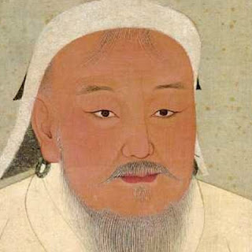

Gengis Khan foi um guerreiro, fundador e líder do Império Mongol. Foi estabelecido como khan em 1206, iniciando uma expansão territorial implacável.
Gengis Khan foi um guerreiro, líder e fundador doImpério Mongol no século XIII. Ele nasceu em uma família aristocrata de um clã mongol, mas viu sua vida mudar radicalmente depois que seu pai foi envenenado. Reconquistou seu poder, formou um grande exército e liderou a unificação das tribos mongóis.

Seu nome de nascimento era Temujin, mas foi nomeado “Gengis Khan” (líder universal) em 1206, quando se tornou líder das tribos mongóis. Realizou profundas reformas entre os mongóis, iniciando uma expansão territorial que gerou um vasto território. Morreu em circunstâncias misteriosas, em 1227.
Leia também: História da China — a nação milenar que atualmente é uma das principais potências do globo
Gengis Khan foi um poderoso governante e líder militar que existiu na Mongólia entre os séculos XII e XIII. Ele foi o fundador do Império Mongol, sendo o primeiro khan (ou cã) que esse império possuiu. Foi o responsável por conquistar inúmeras terras, dando origem ao maior império da história da humanidade.
Segundo os relatos, foi um comandante implacável, promovendo grandes massacres durante as suas campanhas militares. Nascido em uma família nobre, Gengis Khan viu sua família perder tudo e precisou reconquistar o poder, usando-o para liderar um processo de unificação das tribos mongóis.
Foi responsável por estabelecer uma organizada administração do Império Mongol, sendo o comandante do exército, estabelecendo uma preparação exigente, sobretudo no manejo do arco e flecha. Manteve uma política cultural tolerante, apesar de ser um conquistador implacável. Sua autoridade foi incontestada, sendo o título que recebeu uma demonstração disso (Gengis Khan é traduzido como “líder universal”).
Faleceu em circunstâncias misteriosas em 1227, provavelmente acometido de peste bubônica. O poder de seu império não diminuiu depois de sua morte, com as terras sob domínio dos mongóis sendo ampliadas pelos seus sucessores.
Não se sabe ao certo o ano em que Gengis Khan nasceu, mas a data mais aceita aponta que ele teria nascido em 1162. Outros historiadores falam que ele pode ter nascido em 1155 e 1167. O local de nascimento dele também gera debates, como o local mais aceito sendo Delun-Boldog, na atual Mongólia.
Ele pertencia ao clã borjiguim, sendo filho de Yesugei e Hoelun. O pai de Gengis Khan, Yesugei, era o chefe do clã, sendo um homem respeitado e poderoso. Diversas lendas se estabeleceram na cultura mongol a respeito do nascimento de Gengis Khan, apontando supostos presságios que demonstrariam sua predestinação ao poder.
O nome de nascimento de Gengis Khan era Temujin e conta-se que, quando ele tinha cerca de nove anos, o seu pai acompanhou Temujin em uma viagem para encontrar uma esposa para ele, fazendo um acordo com outro importante chefe mongol. Na viagem de volta, Yesugei foi envenenado por homens tártaros.
Após a morte de Yesugei, a mãe de Temujin, o próprio Temujin e seu irmão mais novo foram expulsos do clã, sendo obrigados a viver por conta própria nas estepes. Eles, no entanto, conseguiram sobreviver, mas Temujin encarou diversos desafios. Ele se casou com 15 anos, mas viu sua esposa ser sequestrada por membros de um clã mongol.
Temujin se aliou com um amigo seu chamado Jamukha, conseguindo recuperar a esposa do cativeiro. Quando ela foi resgatada, estava grávida, havendo dúvidas se a criança que nasceu dessa gravidez, Jochi, era, de fato, filho de Gengis Khan. Após isso, a relação entre Temujin e Jamukha começou a se abalar.
Temujin começou a formar o seu próprio grupo, fazendo com que alguns homens de Jamukha o abandonassem para aderir como seguidores de Temujin. Isso gerou um ressentimento em Jamukha, resultando em uma guerra travada entre os dois em 1187, com Temujin sendo derrotado. Na década de 1190, Temujin reconstruiu seu poder, formando um exército poderoso e conquistando diversas tribos mongóis.
Leia também: Alexandre Magno — outro grande conquistador marcado na História
Gengis Khan iniciou uma campanha para unificação das tribos mongóis, derrotando os merquites, naimanos, tártaros, keraites, entre outras tribos mongóis. Em 1206, consolidou-se como o grande líder das estepes mongóis, sendo reconhecido pelas tribos mongóis como “Gengis Khan”, isto é, o líder universal dos mongóis.
Com os novos poderes em mãos, Gengis Khan formou um grandioso e poderoso exército, conhecido pela habilidade dos cavaleiros que manejavam arco e flecha. Ele também estabeleceu um sistema de escrita e foi responsável por estabelecer um código de leis chamado Yasa. Esse código estabeleceu uma série de regras e normas para os mongóis, como punições para crimes.
Ele também estabeleceu um sistema postal, aprimorando a comunicação e tomou medidas para enfraquecer as divisões tribais, reforçando sua autoridade como comandante militar dos mongóis. Seu império ficou famoso por conceder liberdade religiosa para a população conquistada, mas era implacável em batalha, atacando locais de maneira brutal e dizimando seus inimigos, quando achava necessário.
Gengis Khan passou os primeiros anos de seu canato consolidando o seu poder na Mongólia e assentando as bases para dar início a sua expensão territorial. Essa expansão foi iniciada em 1209, quando ele conquistou o Império Tangute, com suas campanhas militares se estendendo até o ano de sua morte, em 1227.
Em 1211, Gengis Khan iniciou uma campanha militar contra o Império Jin composta por cerca de 100 mil homens. Em 1215, os jin haviam sido conquistados pelos mongóis, em uma campanha marcada por ataques extremamente violentos dos mongóis, que dizimavam as populações das cidades que conquistavam.
Após realizar essas conquistas na China, Gengis Khan voltou seus olhos para o oeste. A conquista da China, no entanto, representou um grande desafio para Gengis Khan, que lidou com cidades fortificadas — o que era incomum na Mongólia —, sendo obrigado a aprender com engenheiros chineses a desenvolver armas de cerco.
Em 1218, os mongóis conquistaram Kara-Khitai, na Ásia Central. No ano seguinte, Gengis Khan iniciou uma campanha contra o Império Corásmio, sendo essa campanha atribuída a um ato de hostilidade cometida por esse império. O Império Corásmio, de cultura persa e religião islâmica, entrou na rota de Gengis Khan depois de assassinarem um diplomata de Gengis Khan.
Gengis Khan organizou um exército de 200 mil homens invadindo a região e conquistando-a em 1221. Diversas cidades da região foram destruídas e algumas estatísticas apontam que as tropas de Gengis Khan podem ter sido responsáveis pela morte de mais de um milhão de pessoas durante a campanha.
Novas expedições mongóis foram realizadas a partir de 1222 na região da Geórgia e nas terras da Rus Kievana. Em 1225, Gengis Khan retornou para a Mongólia para lidar com revoltas nas terras do Império Tangute, falecendo em 1227.

O Império Mongol, sob o domínio de Gengis Khan, não foi derrotado. Ele faleceu em 1227 por causas naturais, mas o império manteve-se unido ainda por algumas décadas. Foi somente no final do século XIII que o Império Mongol se fragmentou.
A morte de Gengis Khan teria ocorrido em 18 de agosto de 1227 e as causas de sua morte ainda são debatidas pelos historiadores. Durante muito tempo, cogitou-se que a morte do líder mongol teria ocorrido por conta de ferimentos após uma queda de cavalo ou por conta de uma febre tifoide. Entretanto, evidências recentes apontam que o líder mongol, provavelmente, teria morrido de peste bubônica.
Gengis Khan faleceu enquanto estava na China, tendo seu corpo sido transportado de volta para a Mongólia e enterrado em um local desconhecido. Depois de sua morte, a chefia do Império Mongol passou para as mãos de Ogedei, filho de Gengis Khan. O Império Mongol seguiu crescendo até o reinado de Kublai Khan, neto de Gengis Khan, entrando em decadência a partir do século XIV.
Gengis Khan é considerado um herói nacional na Mongólia, sendo uma figura importante na história do povo mongol. Ele foi o responsável por unificar as tribos mongóis e estabelecer uma série de medidas que modernizaram a região. Ele também deu início ao processo de expansão territorial da Mongólia, fazendo desse império o maior da história da humanidade.
Apesar de ter estabelecido medidas importantes na justiça e organização do Império Mongol, a figura de Gengis Khan ficou conhecida por ter sido um conquistador implacável. Os historiadores apontam, no entanto, que essa imagem deve ser vista com cautela, uma vez que quase todos os relatos sobre Gengis Khan foram escritos pelos povos que ele conquistou.
(Unioeste) Sobre o Império dos Mongóis, território que compreende a atual China, assinale a alternativa INCORRETA.
a) Os mongóis e outros grupos nômades viviam espalhados pelas estepes da Ásia, ao norte da China.
b) O jovem guerreiro Gêngis Khan, tendo reunido várias tribos, ocupou a China com grande devastação, conquistando Beijing (Pequim), em 1215.
c) A monumental Muralha da China, cuja construção iniciou-se no século III a.C., a despeito de sua grandiosidade, não deteve a invasão dos mongóis.
d) Kublai Khan, descendente de Gêngis Khan, instalou a capital do Império em Beijing em 1264.
e) O comerciante italiano Marco Polo esteve na China entre 1275 e 1292, servindo à corte de Kublai Khan, tornando-se posteriormente um dos imperadores mais poderosos daquela época.
Resposta: Letra E.
Marco Polo foi um comerciante italiano que realmente esteve na China e que serviu a Kublai Khan. Entretanto, ele não obteve nenhum tipo de poder político e não foi imperador no Império Mongol.
O Império Mongol, fundado por Gengis Khan, foi o maior império em extensão territorial da história. Qual dos locais abaixo nunca foi conquistado durante o canato de Gengis Khan?
a) Império Tangute
b) Império Jin
c) Império Corásmio
d) Kara-Khitai
e) Rus Kievana
Resposta: Letra E.
A Rus Kievana chegou a ser invadida e atacada por tropas mongóis na década de 1220. No entanto, as tropas mongóis não conquistaram a região durante o canato de Gengis Khan. A região só foi conquistada pelos mongóis em 1241, quando Gengis Khan já não estava vivo.
CURRY, Andrew. Onde repousa Gengis Khan? O mistério continua por desvendar. Disponível em: https://www.nationalgeographic.pt/historia/tumulo-gengis-khan-mongolia-misterio_4546
CARTWRIGHT, Mark. Genghis Khan. Disponível em: https://www.worldhistory.org/Genghis_Khan/